Learning Modes
Everything starts from one sentence at the top of the screen. Each colored word is a dropdown; changing one rewrites what the fretboard shows.
The sentence header
The header reads as ordinary prose and every highlighted word opens a picker:
I want to learn scales in E Major.
| Word | Choices |
|---|---|
| learn / identify / train | The verb picks what the app is for right now — showing you something (learn), naming something you play (identify), or practicing in rounds with levels you earn (train: timing, harmony). Switching to identify keeps your learn mode and its chord where they were, so switching back returns you there. The key is shared: change it in identify and learn follows. |
| Mode | Scales, Chords, Triads. |
| Root note | All twelve notes, spelled the way the key is written — F Major reads B♭, not A♯. |
| Scale type | Major, Minor, Pentatonic Major and Pentatonic Minor lead the list; the rest follow under a More scales heading — Blues, which is free, then Dorian, Mixolydian, Phrygian, Lydian, Locrian, Harmonic Minor, and Melodic Minor, which need Pro and show a lock. In identify it is one flat list, with no heading. |
| Chord | In Chords mode, and optionally in Scales mode, a chord picker backed by the Chord Atlas. |
| Triad type | In Triads mode, in place of the scale: Major, Minor, Augmented, Diminished. It names one triad on the root, not a key. |
In a wide window the sentence reads as one line, and scrolls sideways if it runs longer than the window. In a narrow iPad window it wraps onto a second line, or a third, the way text does. In a short one, where the neck needs the room, it folds into a summary in the top bar — just its subject, such as E Major — and tapping the summary opens the whole sentence, every dropdown live. On the Mac the header is always one line.
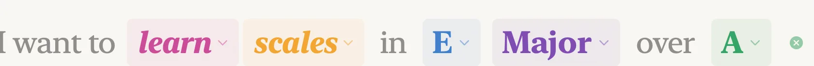
Scales
Purpose: learn a scale across the whole neck in any key.
What you pick: a root note and a scale type — twelve scales in total, covering the major and minor scales, both pentatonics, the blues scale, five modes, and harmonic and melodic minor.
Free or Pro: Major, Minor, both pentatonics and Blues are free. The five modes, harmonic minor and melodic minor are Pro.
On the fretboard: every note of the scale is marked. The scale timeline above the neck lays the twelve semitones out in a row so you can see the shape of the key itself. Below the neck, Visual Groupings let you overlay CAGED shapes, the scale’s five position boxes and three-notes-per-string patterns — one at a time, or all together.
Adding a chord: Scales mode has an optional chord slot at the end of the sentence: a chord to practice the scale over. It reads a chord until you fill it: “I want to learn scales in E Major over a chord.” Tap it to pick a chord from the Chord Atlas — “… in E Major over Am.” — and the chord starts sounding, held under the scale while you play it. The scale timeline gains a chord rail and a Chord transport: press the transport to stop the chord, and again to bring it back. The fretboard stays the scale's: in Scales mode the scale is the subject, and a chord tone drawn louder than its neighbors answers a question you did not ask. Clear the chord with the ✕ beside it, or Clear chord in the Atlas, to stop it and go back to the scale on its own. Changing the key root or the scale removes it too, and it is not kept when you quit. To see a chord's tones marked on the neck, switch to Chords mode.
Use it to: learn one key thoroughly, then switch on Box Shapes or CAGED to see how the patterns you already know line up inside it.
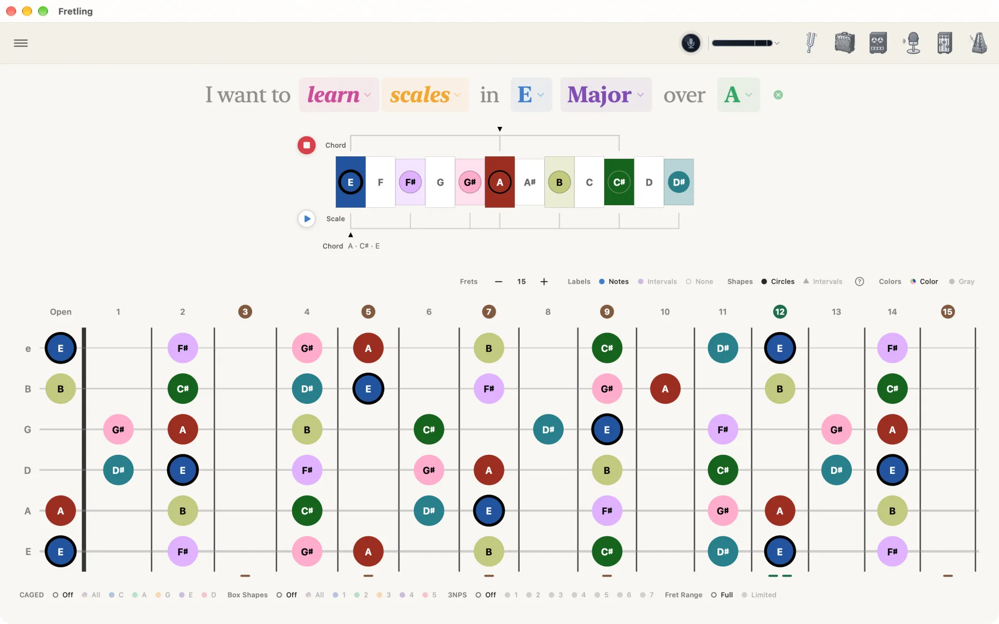
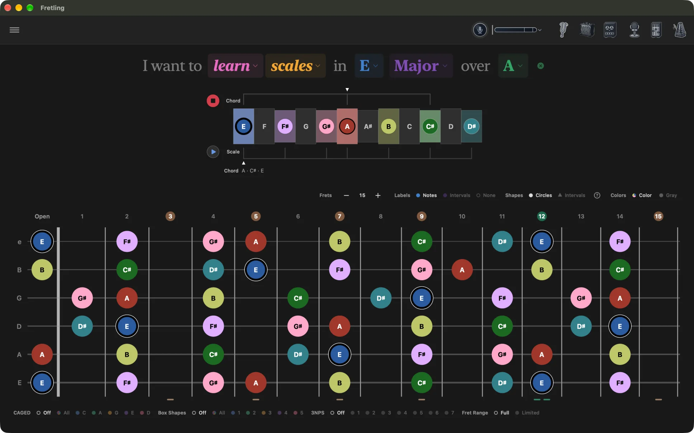
Chords
Purpose: explore the chords of a key and see where each one sits on the neck.
What you pick: a chord, and the key it is read against. The sentence puts the chord first — “I want to learn chords: Am in C Major” — and the chord's name is the button that opens the Chord Atlas, a catalog of 57 chord types on all twelve roots. Changing the key never changes the chord: an Am stays an Am, read against the new key.
In a key, or without one: the word in is itself a dropdown, with the same two choices identify has. Pick without a key and the key is dropped: the scale leaves the sentence, and the interval colors re-anchor on the chord's own root, so what you see is the chord measured from itself rather than from a key it may not belong to. It stays a dropdown in both states, so the key goes back on from the same place it came off. It is the same choice identify and play through use, and Fretling remembers it.
Borrowed harmony: in a Major or Minor key, the Atlas names what a chord outside the key borrows. A secondary dominant seventh reads Borrowed · V/V — D7 in C Major, while a plain D triad reads Outside key — and a chord taken from the parallel key reads Borrowed · iv, like Fm in C Major. In the other ten scales a chord is in the key or outside it. There is nothing to switch on.
On the fretboard: every tone of the chord is marked across the neck, its root ringed. With a key, colors and interval labels are measured from the key's root, as on the timeline — in C Major the A of an Am reads as the 6th — and the key's root stays on the neck in gray, ringed, even when it is not in the chord. Set Non-Chord Notes to On in the chip bar under the neck to keep the rest of the scale visible underneath in gray, so you can see the chord inside its key. Non-diatonic chord tones are always drawn, whatever the scale filter is doing.
Chord shapes: with the Chord Shapes chips below the neck set to On — the default — real fingerings for the chord are drawn on the neck, optionally with finger numbers. While they are on, the neck shows only the notes of the shapes lit in their legend; tap All there for every chord tone. See Chord shapes.
Use it to: see how the chords of a key relate to one another, and which CAGED grip each major or minor chord is.
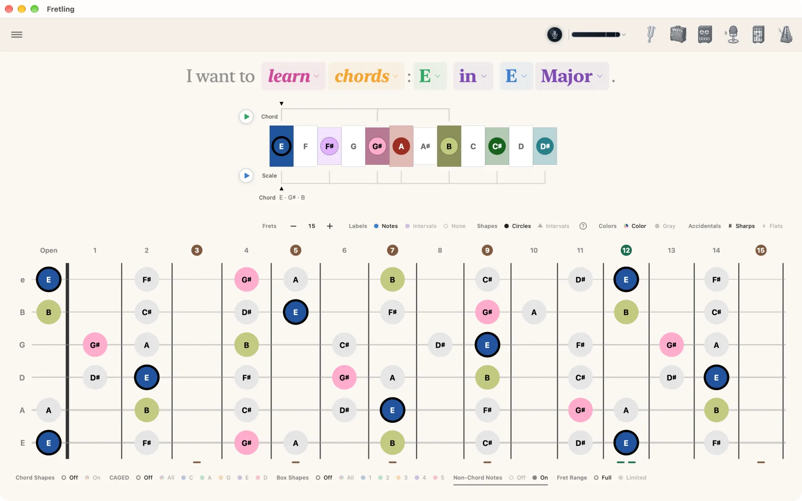
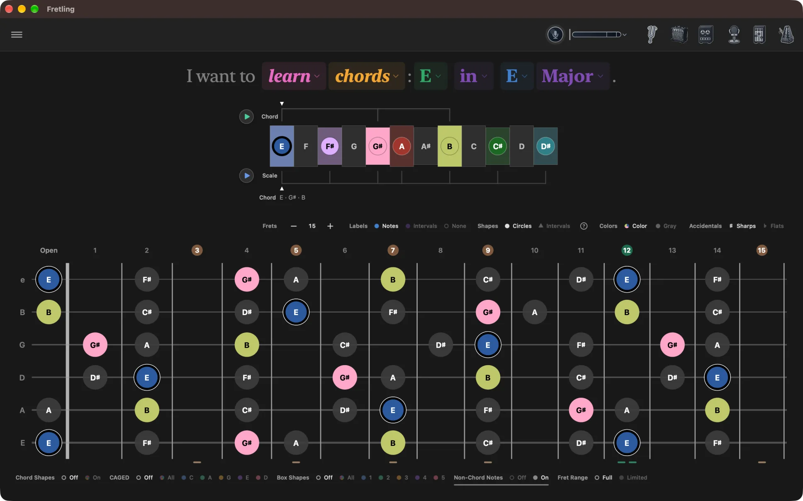
The Chord Atlas
The Atlas is Fretling's chord catalog, and it is free in every mode. Open it by tapping the chord in the sentence — the chord's name in Chords mode, or the chord slot at the end of the Scales sentence. On the Mac it opens as a panel under the chord; on iPad, as a sheet.
How it is laid out: across the top, the chord's name and two key caps — in C Major and without a key — which flip the same choice as the sentence's in. Below them, the twelve roots, laid out like a keyboard. Then the chord types in eight families — Triads, Sixth/Add, Sevenths, Suspended, Extended, Altered, Symmetric and Other — each card showing the chord's name, its type and its formula (1 ♭3 5 ♭7). At the bottom sits a tray that starts folded: the chord, Hear, and where the chord sits in the key (In key · vi). Unfold it with the arrow by the name for Add, Alter and Omit (add9, ♭5, no3 — a chip that would not change the chord is dimmed) and Slash, a bass note under the chord (C/E).
Every pick is live: a tap commits at once — the neck and the sentence follow, the chord sounds, and the Atlas stays open, so you can walk through chords by ear without dismissing the sheet and reopening it each time. Root, card, modifier and bass picks all play. A family tap opens the family without a sound, and picks its first type if your chord is not in it. Hear plays the current chord again.
It knows your key. With a key, each root carries the Roman numeral of its chord in the key on a rail under it — the key's roots solid, borrowed ones lighter, the rest dashed outlines — and chords the key owns or borrows sort to the front of each family. A card says so when it differs from its root: Outside key, Borrowed · V/V. In a Major or Minor key a secondary dominant seventh reads Borrowed · V/V and a chord taken from the parallel key reads Borrowed · iv; in the other scales a chord is in the key or outside it. Nothing has to be switched on, and none of it is behind the Pro unlock.
Chords the library lacks. Eleven types have no fingerings in the chord library — 7sus2, maj7sus4, 9sus2, 9sus4, m13, 7♭13, whole-tone, diminished-scale, quartal, quintal and dimMaj7 — and neither do slash chords beyond plain major and minor ones, such as Fadd2/G or C7/E. For those, Chord Shapes draws grips worked out from the chord's notes: the bass on the lowest string, the rest within four frets, and no finger numbers. Identify draws the same grips, and the Atlas lists all 57 types.
From the keyboard: ← and → move along a row, ↑ and ↓ jump between the roots, the families, the cards and the tray, Return picks, and Esc closes.
It follows the marker display bar. Labels and Colors reach the Atlas the way they reach the neck, and its sharps and flats come from the same key, so a chord spelled with flats on the fretboard is spelled with flats here. The one deliberate difference: with Labels set to None the Atlas keeps its chord names, because a catalog with no names on it is not a catalog.
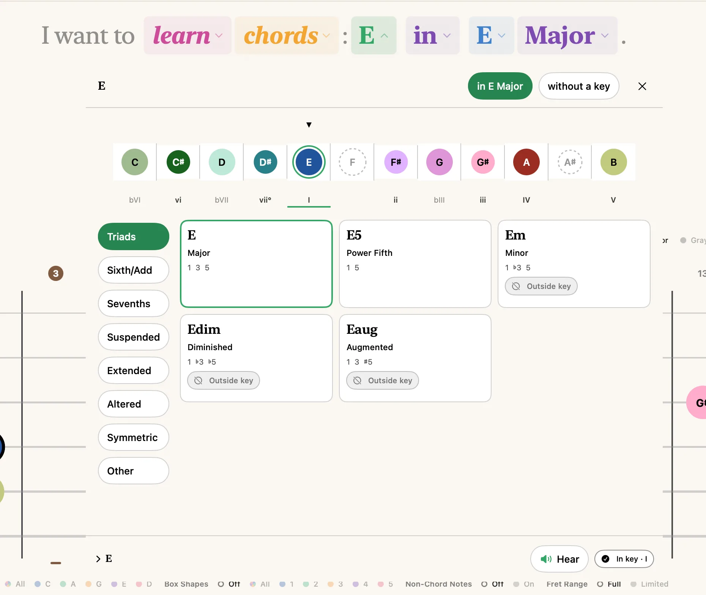
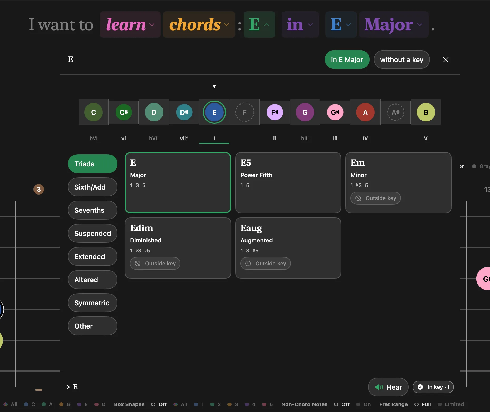
Triads
Purpose: practice three-note voicings on specific sets of strings.
What you pick: a root note and a triad type — Major, Minor, Augmented, or Diminished. The sentence reads “I want to learn triads in C Major”, but the last word is the triad type, not a key: it means the C major triad — C, E and G — and nothing else, so no scale is drawn. Fretling remembers the triad type separately from the scale, so coming over from scales in A Minor can read triads in A Major until you pick Minor here. The root is the one every mode shares: changing it here changes it in Scales and Chords too.
On the fretboard: every tone of the triad is marked across the whole neck, with its root ringed. The Strings group under the neck narrows the view to one set of three neighboring strings, numbered from the thinnest — 123 is G, B and high e; 234 is D, G and B; 345 is A, D and G; 456 is low E, A and D. It starts on All. On one string set the shapes climb the neck in order: root position, first inversion, second inversion, then root position again an octave up. Fretling draws them but does not label which is which.
Triad lines: with a string set picked, turn on Show Triad Lines in Settings → Fretboard and a line joins each shape one hand can hold. The lines need a string set: with Strings on All the switch draws nothing.
CAGED and Box Shapes work here too, laid over the triad. CAGED draws the major grips for a major triad and the minor grips for a minor one; augmented and diminished triads have no CAGED grip, so the group leaves the row for them. Box Shapes draws the five boxes of the major pentatonic on your root for a major or augmented triad, and of the minor pentatonic for a minor or diminished one — so for augmented and diminished the boxes hold the plain 5th, not the triad's own. Box Shapes is the selection Scales uses, and CAGED is one selection shared by every mode: pick CAGED A here and Scales, Chords and Progressions show the A shape too.
Hearing it: the timeline above the neck lays out the twelve notes from the triad's root with its three tones filled and joined by the Chord rail. Its round Chord transport holds the triad until you press it again — close together in root position on the chord pad, not the shape you are looking at. Changing the root or the triad type stops it.
Use it to: learn a triad on one string set, then move the same shape up the neck and across to the next set.
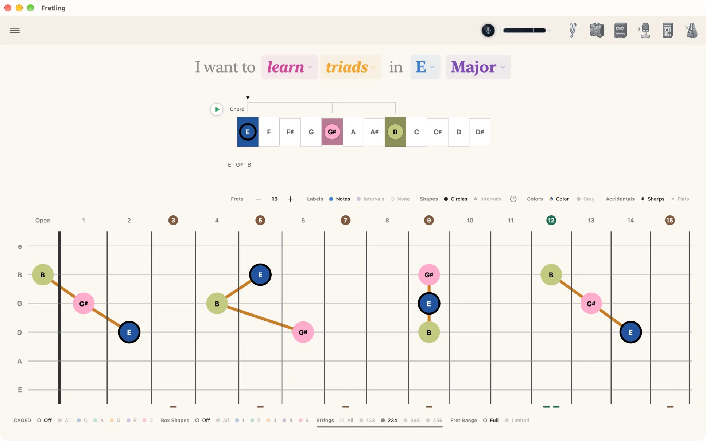
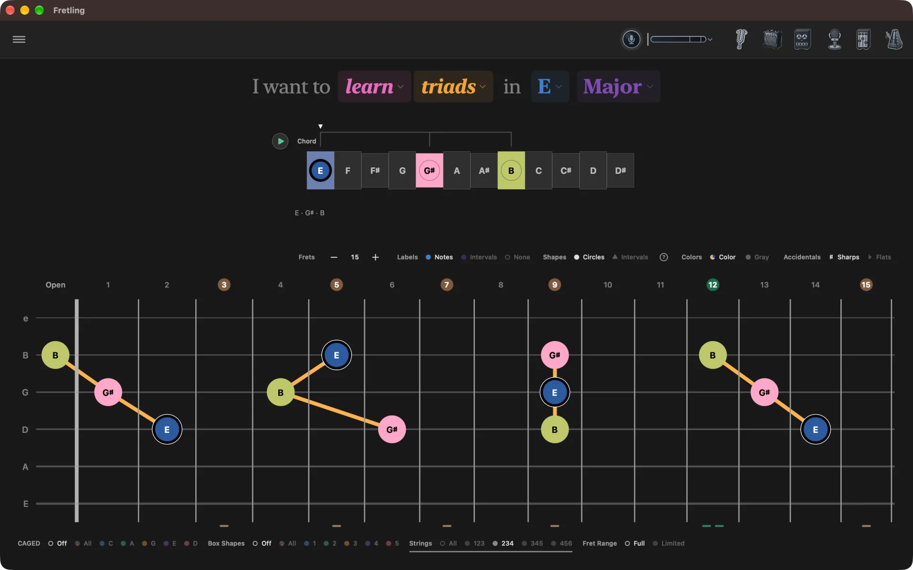
Identify a chord
Purpose: the reverse lookup — you have a shape under your fingers and want to know what it is called.
Pick identify as the verb in the header and the sentence becomes “I want to identify a chord in C Major”. The word in is a dropdown: pick without a key and it reads “… a chord without a key”. Fretling remembers the choice. The key is the one learn uses, so changing it here changes it there. With a key, the card adds one line saying what the chord is in that key — vi in C Major, iv in C Major (borrowed), Outside C Major. When two readings fit your notes equally well, the one that belongs to the key comes first: A, E and G over an A read Am7no3 in C Major and A7no3 in D Major. The key never puts a worse fit ahead of a better one, and it changes nothing on the neck.
Giving Fretling the notes
- Tap them onto the neck. The neck starts empty; the first time, a tip above it says Tap the neck to place notes; tap again to remove. Tap a fret to place a note — Fretling plays it once — and tap it again to remove it. Each string holds one note, as a fretting hand does, so tapping another fret on the same string moves the note there. Two different notes are enough for an answer. A placement toolbar under the neck gives you Undo, which steps back one change at a time, Redo, which puts it back (⌘Z and ⇧⌘Z on a keyboard), Clear, and a running count of placed notes.
- Play them. Pro Press Hear me play in the placement toolbar — it opens Live Detect, raises its panel so the Stop control is reachable, and starts it listening. Play the chord. Once Live Detect has named it, the button becomes Capture what I played: press it and that chord is placed on the neck, in place of whatever you had put there (Undo brings that back). What lands is the chord Live Detect named, voiced Fretling's way from the bass up — not your fingering, so move notes afterward if your shape was different. Live Detect names triads, power chords, sus2 and sus4, sixths, and the common sevenths; a 9th or an add9 comes out as the nearest of those or not at all, so tap richer chords in. The same move is on Live Detect's own panel as Send to fretboard. Without Pro the button shows the unlock sheet and the microphone never opens.
Reading the results
The card above the neck answers as soon as two different notes are placed. It gives one name, large — C, C/E, Am7, Cmaj7no5 — and under it, when there is something to explain, why: 1st inversion — E in the bass., 5th (G) omitted — add G to complete Cmaj7., C with an added F♯. Below that, your notes from low to high, each with its interval from the chord's root, the lowest marked bass. On the neck the lowest note is ringed, because the bass often decides the name.
The same notes are often more than one chord. When they are, a Readings row lists the other names, up to five in all, best first. After a complete match it lists only other complete names: A, C, E and G over an A read Am7, then C6/A. When the best answer is itself a near miss, or only two notes are placed, near misses join the list — Ano3, Asus2. Tap a reading and the card and the neck's colors follow it, with a line saying why it ranks lower: Same notes as Am7 — A in the bass favors Am7.
From a reading you can:
- Hear — play that chord on your Playback instrument: Fretling's own voicing of the name, not the notes you placed.
- Voicings — draw up to three playable fingerings for that name on the neck; press it again to hide them.
- Chord Atlas — leave identify for learn's Chords mode, with this reading as the chord. The Atlas itself stays closed; tap the chord in the sentence to open it.
Your placed notes stay put when you switch to learn and back, and clear when you quit.
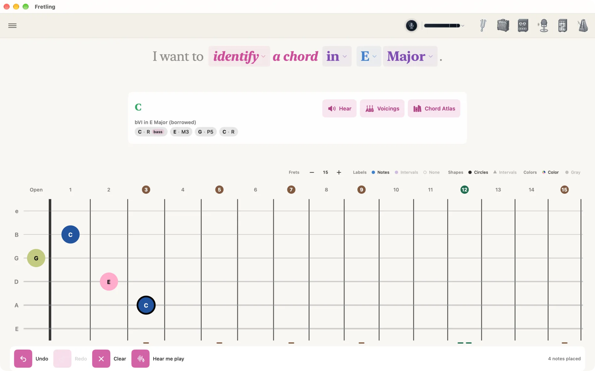
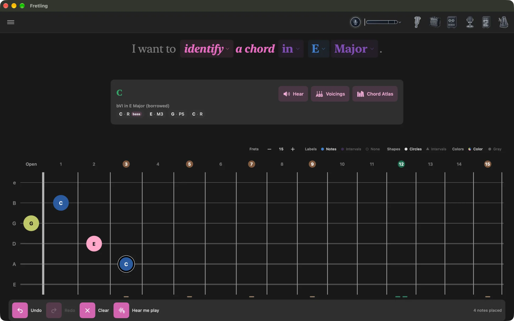
Train · Timing
Purpose: play rhythms in time, and see exactly where each hit lands against the beat.
Pick train as the verb and my timing after it, and the sentence reads “I want to train my timing with funk, level 3.” The style picks the groove the drums play under you: rock, funk, Motown, shuffle, swing, bossa nova, one drop, ska, tresillo, second line, boom bap or 6/8. The level picks the rhythm.
| Level | What it asks |
|---|---|
| 1 · Quarter notes | Play on every beat. |
| 2 · Eighth notes | Two even notes on every beat. |
| 3 · Offbeats | The “and”, between the beats. |
| 4 · Sixteenths | Four even notes on every beat. |
| 5 · Syncopation | A pattern with notes between the beats. |
| 6 · Rests and pushes | Leave the rests empty; the pushes come before the beat. |
| 7 · Swing | Swung eighths: long, short. |
| 8 · Displacement | A pattern shifted off its usual place. |
| 9 · Click on 2 and 4 | The click sounds only on 2 and 4: you feel the 1. |
| 10 · Keep the time | The band stops for two bars; you keep going. |
Levels 1 to 3 are free. Pro Levels 4 to 10 need Pro. A level opens once you pass the one before it: four of your last five rounds at 80% or more.
A round
Press Start. A bar of count-in, then Listen: Fretling plays the rhythm once over the groove. Another bar of count-in, then Your turn: play the same rhythm on your guitar. Fretling listens through the microphone or your input, and only when each note starts counts, not which note it is. Your hits appear on the chart as they land.
Reading the pocket report
At Result the chart shows the round's bars at true time. Each hit you were asked for is a ring on the beat line; each hit you played is a dot, raised when you were early and lowered when you were late, with a stem back to its ring. The dashed line is your average, and the band around it your spread. A missed hit is a dashed red ring, and an extra one a red cross.
- Ahead of the beat, On the beat, Behind the beat — where your average sits. Within 10 ms either way is on the beat.
- Tight, Steady, Loose — how far your hits scatter around that average: tight at 12 ms or less, steady at 25 ms or less.
- Missed and extra — hits you left out, and hits that matched nothing.
The score is a percentage: a hit within 20 ms earns full credit, less the further off it lands, a miss earns nothing, and each extra costs half a hit.
Beside the score, Result says whether the round counts toward the level: Counts: 80% or more, or Needs 80% and the one thing that cost the most, such as most hits 38 ms late. The line under it counts your last five rounds, says how many a pass needs, and gives your best.
Calibrating your setup
Every setup takes a little time to carry a note from the speaker or string to Fretling, and uncalibrated that delay reads as playing late. Beside the level line before a round, and beside the buttons at Result, the card says Not calibrated · Calibrate… until a setup is calibrated, and then its delay, such as Calibrated · 23 ms · Recalibrate…. Calibrating is once per setup: the microphone or input together with the speakers or headphones. A MIDI keyboard needs none.
- Speakers. Fretling plays 8 clicks and listens for them, and saves the delay it measured: built-in speakers, external speakers and monitors alike. Keep the room quiet and the volume up. If the clicks come back too uneven to trust, it says so: turn the volume up, move closer and try again.
- Headphones, or clicks the microphone can't hear. Fretling uses the delay the device reports. On headphones it plays nothing; anywhere else it tries the clicks first.
- Set by Ear… When neither works, play a note or press a key (tap the screen on iPhone and iPad) with each of the 8 clicks. It is good enough to practice with, though it folds your own lean into the figure, so the card then says Set by ear.
Train · Harmony
Purpose: hear a progression and name each chord by ear.
Pick train as the verb and my ear for chords after it, and the sentence reads “I want to train my ear for chords in C Major, level 3.” The key is the header's: a minor key plays its rounds in minor, and a mode such as Dorian plays as its major or minor, which the card names (Played in D Minor). The level picks the chords.
| Level | The chords |
|---|---|
| 1 · Home and tension | I and V. |
| 2 · Home, away and tension | I, IV and V. |
| 3 · The four chords | I, IV, V and vi. |
| 4 · The rest of the key | Every chord of the key but the diminished one. |
| 5 · Sevenths | Level 4's chords, each as a triad or its seventh. |
| 6 · Inversions | Level 4's chords, with the 3rd or the 5th in the bass. |
| 7 · Secondary dominants | Level 4's chords, and a V7 of another chord, then that chord. |
| 8 · Borrowed chords | Level 4's chords, and one borrowed from the parallel key. |
| 9 · Named progressions | A progression with a name, such as ii–V–I or the Andalusian cadence. |
| 10 · Any key | Level 4's chords, in a key drawn at random each round. |
| 11 · Longer progressions | Eight chords in a key drawn at random, with sevenths, secondary dominants and borrowed chords. |
Levels 1 to 3 are free. Pro Levels 4 to 11 need Pro. A level opens once you pass the one before it: four of your last five rounds at 80% or more.
A round
Press Start. After a bar of count-in, Listen plays the key's cadence to set the key in your ear, then the round's progression once, on the band's keys and bass. The first chord is home, filled in for you, except at Named progressions. Each chord has a slot; pick from the palette under them as the progression plays, or after. Both the numeral and the chord's name show, and the marker bar's Labels setting picks which leads: Intervals the numeral, Notes the name.
At Your turn, Again plays the progression again without the cadence. Once every slot holds a chord, Hear mine plays your answer and Check ends the round.
Reading the result
At Result each slot takes a mark:
- Right — the chord that played.
- Close — another form of the right chord: V for V7, or C for C/E. The slot reads Almost: and names the right one. A close pick earns half.
- Wrong — any other chord. The slot reads It was and names the right one.
Under the slots, the cadence the progression ends on, and over them the name of the progression, when each has one. At Any key and Longer progressions the line opens with the round's key. Hear the answer plays the progression again, and Hear yours plays the chords you picked, so you can hear where they part. The score is the share of slots you named, a close pick counting half.
Train · Fingers In testing
Purpose: build speed and finger independence with dexterity drills on the neck, a finger number on every note.
Pick train as the verb and my fingers after it, and the sentence reads “I want to train my fingers on the spider, level 3.” The drill picks what your hand plays, and the level picks how fast. A drill always sits on the frets it names, whatever the scale, chord shapes, string sets or fret window would otherwise show.
| Drill | What your hand plays |
|---|---|
| The chromatic run | Frets 5 to 8, one finger per fret: 1-2-3-4 on each string, from the low E to the high E. |
| Permutations | The same four frets with the fingers in another order, such as 1-3-2-4. Each round deals one of the 23 orders. |
| The spider | Two strings at a time: fingers 1 and 3 on one, 2 and 4 on the next, the pair climbing a string at a time. |
| String skipping | The chromatic run, skipping a string and coming back one: low E, D, A, G, D, B, G, high E. |
| Position shifts | One string, 1-2-3-4 from fret 1, then from fret 2, and on up to fret 5. Each round picks the string. |
| Legato | Two fingers on each string. Going up, pick the lower note, hammer on the upper, pull off, hammer on again; coming back down, pick the upper note, pull off, hammer on, pull off. Each round deals one of six finger pairs. |
| Stretches | Four fingers over five frets from fret 7, a fret higher on the B and high E strings. Each round picks where the gap falls: between fingers 1 and 2, 2 and 3, or 3 and 4. |
Every drill climbs and comes back down: across the strings, or up the frets for Position shifts.
Finger numbers
While a drill is on the neck, each marker shows the finger that plays it in place of the note name: 1 is your index finger, 2 your middle finger, 3 your ring finger and 4 your little finger. The note you play next lights before you reach it, and at a shift it shows the finger it is about to take.
The tempo ladder
| Level | Notes a second |
|---|---|
| 1 · Eighths at 60 | 2 |
| 2 · Eighths at 80 | 2.7 |
| 3 · Eighths at 100 | 3.3 |
| 4 · Sixteenths at 60 | 4 |
| 5 · Sixteenths at 70 | 4.7 |
The level sets the metronome's tempo when the round starts, and the tempo stays there afterward. Every drill shares one ladder, so a level open on one drill is open on all of them, with either method. One clean round opens the next level, and you can always go back to a slower one.
Levels 1 to 3 are free, on every drill. Pro Levels 4 and 5 need Pro.
Find it and In time
The card's Practice menu picks how a round runs.
- Find it — needs no microphone. Press Start, and Listen plays one pass of the drill, the neck lighting each finger in turn. At Your turn the pass loops silently on the click, the neck still stepping, until you answer Clean or Not yet. Clean opens the next level; after Not yet, retry it or pick a slower level.
- In time — listens through the microphone or your input. Listen plays the pass as in Find it; at Your turn you play one pass on the click, and Fretling grades it.
Retry plays the same drill again, with the same order, pair, gap or string. On a drill that has them, Next deals a different one.
Reading In time's result
At Result the report reads, for example, 46 of 47 notes · Spacing Fair · 9%.
- Notes — a note is right when its pitch is heard on its step. Hammered-on and pulled-off notes count too, matched by their order, since they have no pick attack of their own.
- Spacing — how evenly your picked notes fall: Even at 6% or under, Fair at 12% or under, Uneven above. Hammered and pulled notes don't count toward it. With too few right picked notes to measure, Result shows the notes alone.
The score is the share of notes you got right, reduced once the spacing spreads past 6% and down to nothing at 20%. A score of 90% or more is clean, and opens the next level.